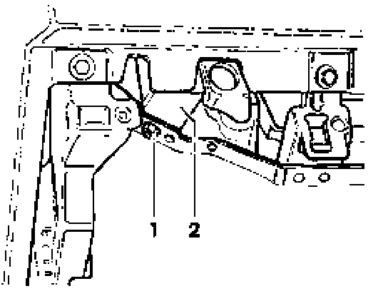

Alarm Module: Service and Repair
Alarm system control module -J284-, removing and installing
Removing

- Remove driver's side instrument panel trim.
- Disconnect 6-pin and 10-pin connectors from alarm system control module -J284-, located behind bracket on left A-pillar.
Vehicles withcruise control:
- Disconnect 12-pin connector from cruise control, control module -J213-, located behind bracket on left A- pillar.
Note: The alarm system control module - J284- and cruise control control module -J213- are located on the same mounting plate.
- Remove nut -1 - from assembly carrier.
- Pull mounting plate locking lugs out from bracket and remove mounting plate with control module -2-.
- Remove control module mounting bolts from mounting plate and remove control module.
Install in reverse order of removal.